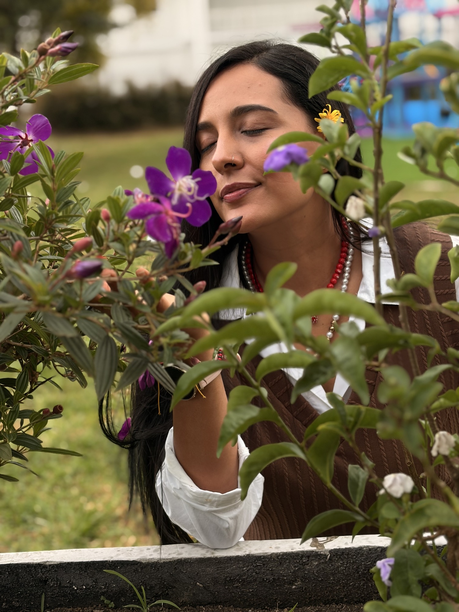

Capítulo 01
Medellín · Vocación de Servicio
¡Un gusto tenerte acá! Mi nombre es Catalina Arango Rivera.
Soy originaria de Medellín, Colombia, y desde muy joven sentí una profunda necesidad de estar al servicio de los demás, aunque en ese momento aún no comprendía del todo cómo canalizar ese llamado que latía en mi corazón.
Buscando ese propósito, a los 27 años comencé a estudiar Comunicación y Medios Periodísticos. Lo viví con enorme pasión, a pesar de enfrentarme al gran reto de hablar en público. Me gradué en 2016 con inmensa alegría, pero entendiendo que ese era apenas el punto de partida para recordar quién era verdaderamente. Posteriormente me especialicé en Talento Humano, un área centrada en el corazón de las personas y sus dinámicas vinculares.
pin_drop
Medellín, Colombia
school
Comunicación & Periodismo
groups
Talento Humano